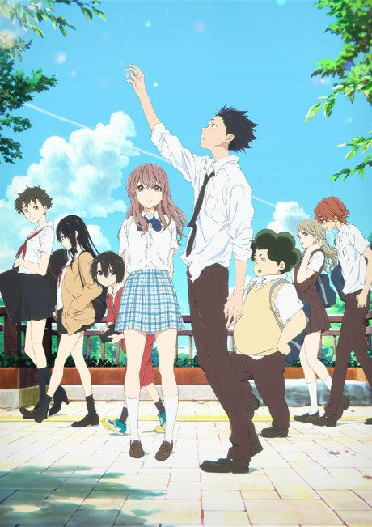
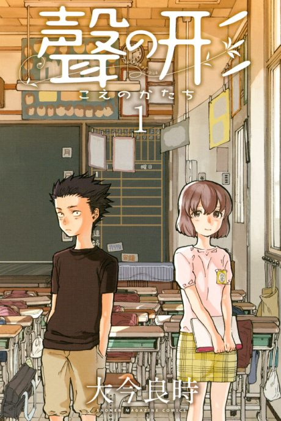

A Silent Voice
聲の形
The anime takes the story to Film.
8.8AniList score
—Animeter, no votes yet
1film
Anime finished. Where does the manga pick up?
StatusFully adapted
The 2016 film covers the whole story through its emotional climax, but it cuts several subplots (the student film project, many backstories) and the final post-graduation chapters. Reading the manga from Chapter 1 is recommended to get the cut material.
16264 end
Movie